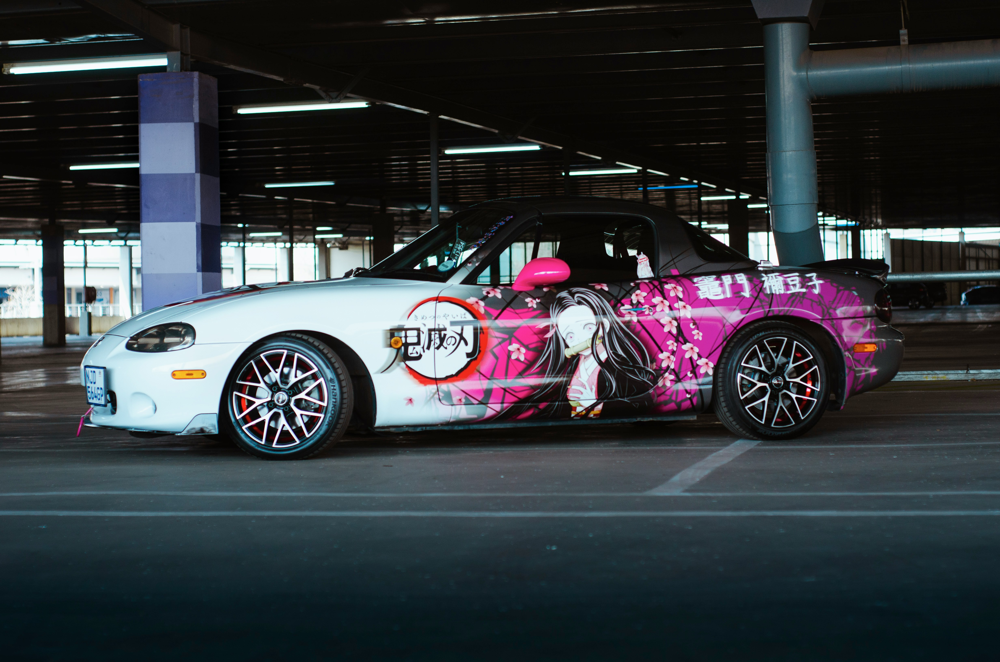

The Mazda Miata, or MX-5, is an iconic two-seater sports car celebrated for its affordable yet exhilarating driving experience. Launched in 1989, its timeless design and lightweight chassis contribute to its status as a classic roadster. With a perfect 50:50 weight distribution and nimble handling, the Miata excels on both winding roads and race tracks. Its modest yet spirited engine, often naturally aspirated, emphasizes the joy of driving. The Miata community, united by a love for pure performance, has cemented this car as an enduring symbol of driving pleasure.
